Omnissa Horizon 8 Console Configuration
Navigation
This post applies to all Omnissa Horizon versions 2006 (aka 8.0) and newer.
- Change Log
-
Preparation:
- Horizon Service Account
- vCenter Role for Horizon
- Active Directory Delegation
- Events SQL Database
- Horizon Console
- Licensing
- Administrators
- Help Desk
- vCenter
- Instant Clone Domain Accounts
- Restrict Remote Access
- Disable Secure Tunnel
- Event Database and Syslog
- Global Settings
- Client Version Restrictions
- Global Policies
- Backups
:idea: = Recently Updated
Change Log
- 2023 July 8 - Global Settings - Horizon Agent Restrictions in Horizon 2306 (8.10) and newer
- 2021 Sep 30 - Horizon Console - added step to disable CORS for Horizon 2106 and newer to fix HTML Access
- 2021 Jan 8 - updated entire article for Horizon 2012 (8.1)
- 2020 Aug 14 - updated entire article for Horizon 2006 (aka Horizon 8)
Preparation
Horizon Service Account
- Create an account in Active Directory that Omnissa Horizon will use to login to vCenter. This account can also be used by Instant Clones to create computer accounts in Active Directory.
- Make sure the password does not expire.
- Domain User is sufficient. Permissions will be delegated where needed.
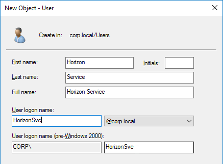
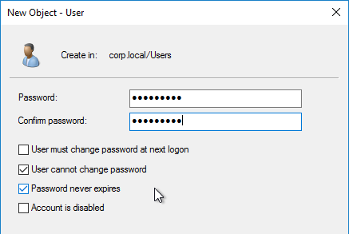
vCenter Role for Horizon
This role has all permissions needed for both full clones and instant clones. See Privileges Required for the vCenter Server User With Instant Clones at Omnissa Docs.
See the Product Interoperability Matrix for supported vCenter versions.
Create vSphere Role:
- In vSphere Web Client, click the hamburger menu icon and then click Administration.
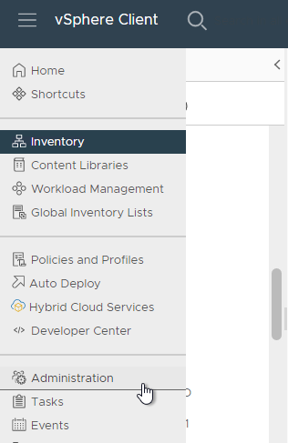
- In the Roles node, click NEW to add a Role.
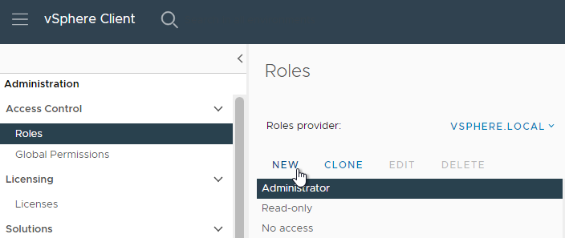
- Give the new role a name.
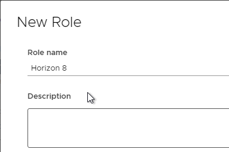
- If you are using vTPM, then on the left, click Cryptographic operations. On the right, enable Clone, Decrypt, Direct Access, Encrypt, and Manage KMS. Scroll down on the right to see more Cryptographic operations permissions.
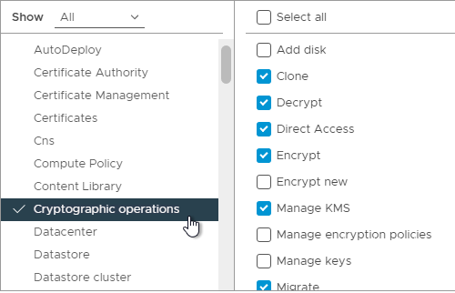
- While still in Cryptographic operations, scroll down and enable Migrate and Register host.
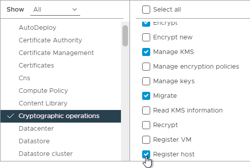
- While still in Cryptographic operations, scroll down and enable Migrate and Register host.
- On the left, click Datastore. On the right, enable Allocate space, and Browse datastore.
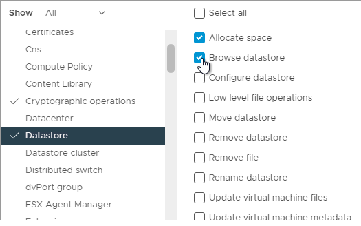
- On the left, click Folder. On the right, enable Create folder, and Delete folder.
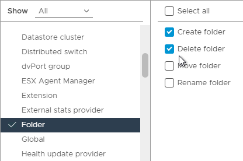
- On the left, click Global. On the right, enable Act as vCenter Server, Disable Methods, and Enable Methods, and then scroll down on the right to see more Global permissions.
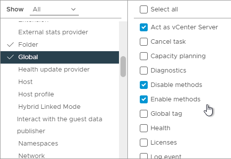
- While still in Global, enable Manage custom attributes, and Set custom attribute.
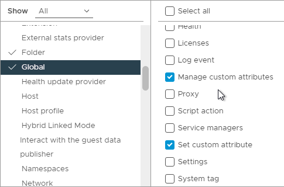
- While still in Global, enable Manage custom attributes, and Set custom attribute.
- On the left, click Host. On the right, in the Configuration section, enable Advanced Settings. Then scroll down on the right to see more Host settings.
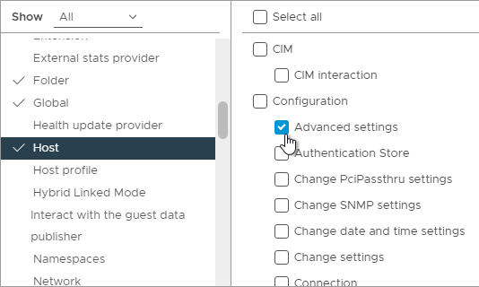
- While still in Host, scroll down to the Inventory section and click Modify cluster.
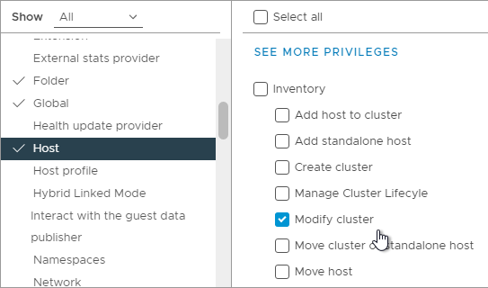
- While still in Host, scroll down to the Inventory section and click Modify cluster.
- On the left, click Network. On the right, enable Assign network.
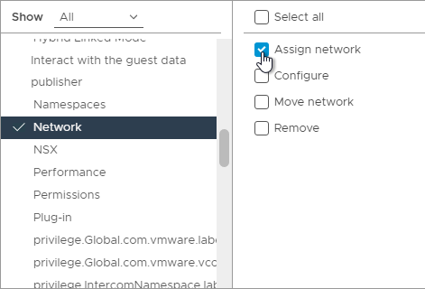
- For Virtual SAN, enable Profile-driven storage and everything under it.
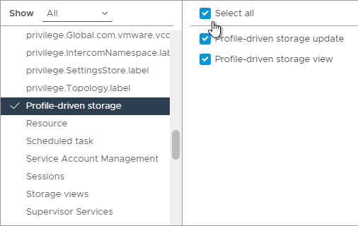
- On the left, click Resource. On the right, enable Assign virtual machine to resource pool, and Migrate powered on virtual machine.
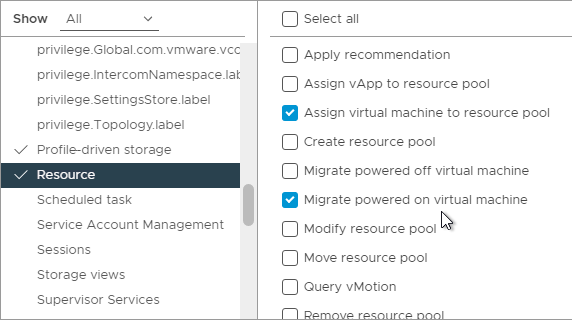
- On the left, click Virtual Machine. On the right, click Change Configuration to enable all Configuration permissions. Scroll down on the right to see more Virtual machine permissions.
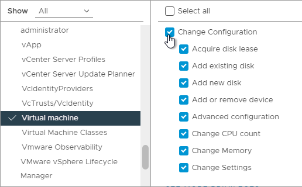
- While still in Virtual Machine, scroll down and select everything under Edit Inventory.

- While still in Virtual Machine, scroll down to the Interaction section, enable Connect devices, and then click See more privileges.
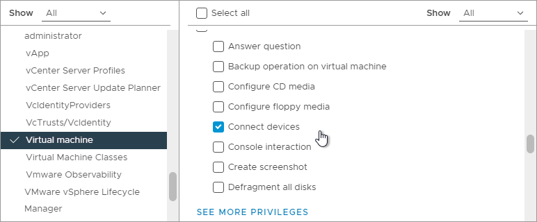
- While still in Virtual Machine, scroll down and enable Perform wipe or shrink operations, Power off, Power on, Reset, and Suspend.
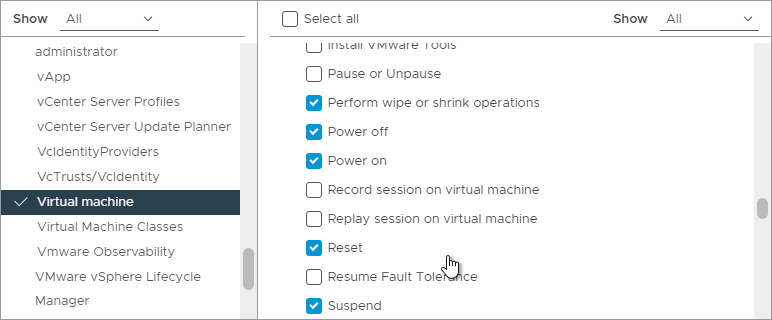
- While still in Virtual Machine, scroll down to the Provisioning section and enable Allow disk access, Clone template, and Clone virtual machine. Then click See more privileges.
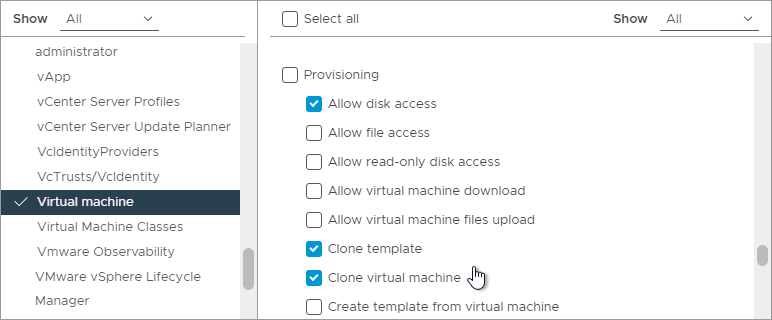
- While still in Virtual Machine, scroll down and enable Customize guest, Deploy template, and Read customization specifications.
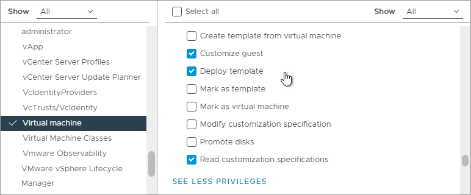
- While still in Virtual Machine, scroll down and click Snapshot Management to enable all Snapshot permissions.
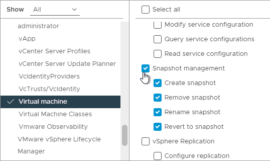
- While still in Virtual Machine, scroll down and select everything under Edit Inventory.
- Click Create.
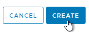
Assign role to service account:
- Create an account in Active Directory that Horizon will use to login to vCenter.
- In vSphere Web Client, in Hosts and Clusters view, browse to the vCenter object. Permissions must be assigned at the vCenter level. It won’t work at any lower level.
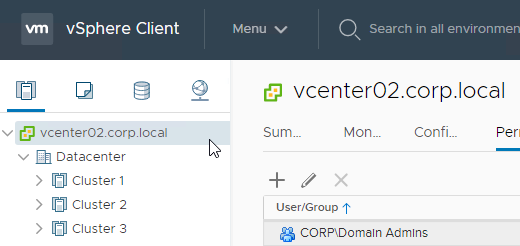
- On the right, select the tab named Permissions.
- Click the plus icon to add a permission.
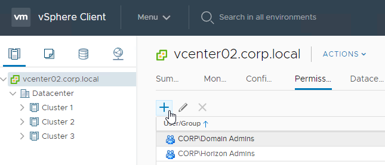
-
In the Add Permission dialog box, do the following:
- Change the User domain.
- Search for the service account.
- Change the Role to the one you created in the previous section.
- Check the box next to Propagate to children.
- Click OK.
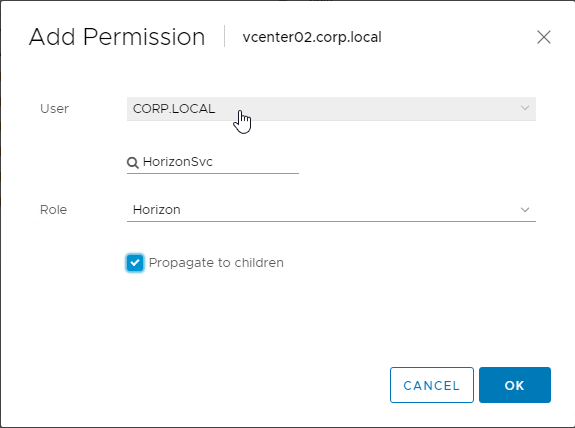
- The service account is now listed on the Permissions tab.
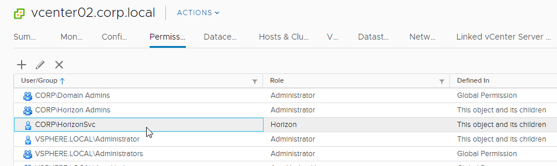
Active Directory Delegation for Instant Clones
Horizon Instant Clones create computer objects in Active Directory. Horizon is configured with an Active Directory service account that must be granted permission to create computer objects. See Create a User Account for Instant-Clone Operations at Omnissa Docs.
- Create an OU in Active Directory where the Horizon Agent computer objects will be stored.
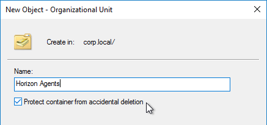
- In Active Directory Users & Computers, right-click the Horizon Agents OU, and click Delegate Control.
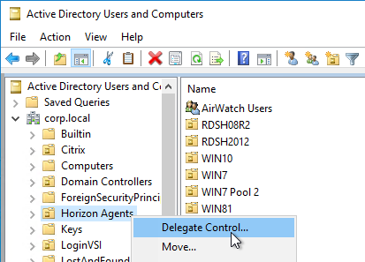
- In the Welcome to the Delegation of Control Wizard page, click Next.
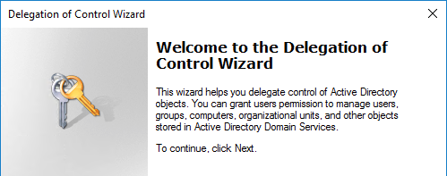
- In the Users or Groups page, add the Active Directory service account for Instant Clones and/or Horizon Composer. Then click Next.
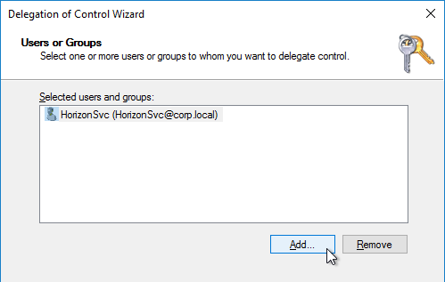
- In the Tasks to Delegate page, select Create a custom task to delegate, and click Next.
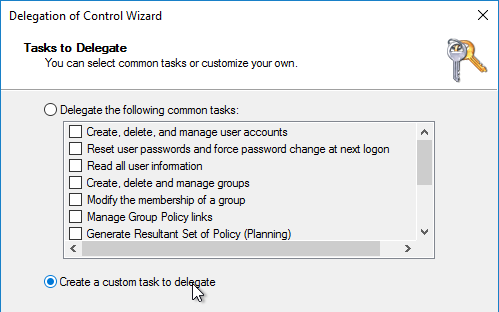
-
In the Active Directory Object Type page, do the following:
- Change the radio button to select Only the following objects in the folder.
- Check the boxes next to Create select objects in this folder and Delete selected objects in this folder.
- Click Next.
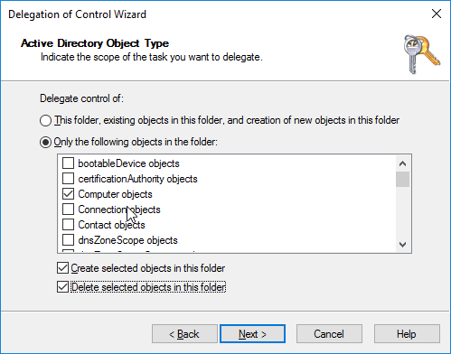
- In the Permissions page, check the boxes next to Read All Properties, Write All Properties, and Reset Password. Then Next.
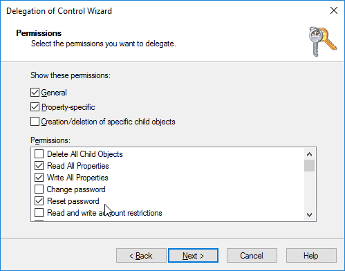
- In the Completing the Delegation of Control Wizard page, click Finish.
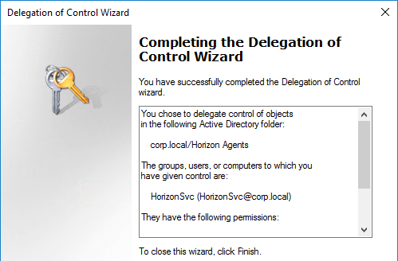
- If you are viewing Advanced Features in Active Directory Users & Computers, if you view the properties of the OU, on the Security tab, click Advanced, find your service account, you should see permissions similar to the following.
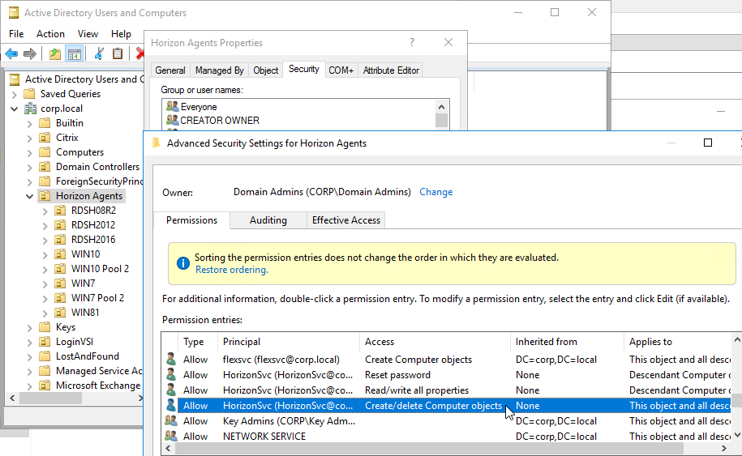
Events SQL Database
Horizon 2103 (8.2) and newer support PostgreSQL. See Prepare a PostgreSQL Database for Event Reporting at Omnissa Docs.
Horizon 2106 (8.3) and newer support SSL to the events database. See SSL Connection to Event Database at Omnissa Docs.
A new empty SQL database is needed for storage of Horizon Events.
- Only SQL Server authentication is supported, so make sure it's enabled on your SQL Server > Properties > Security page.
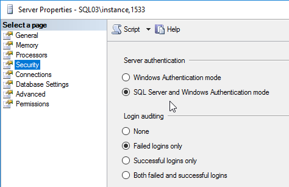
- In SQL Server Management Studio, create a new database.
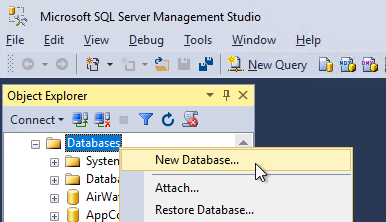
- Name it OmnissaHorizonEvents or similar. Switch to the Options tab.

- Select your desired Recovery model and click OK.
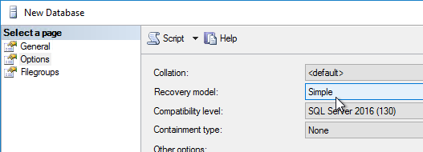
- Under Security > Logins, add a SQL login if one does not exist already. Windows authentication is not supported.
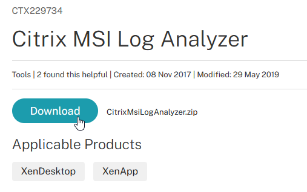
- Right-click a SQL login and click Properties.

- On the User Mapping page, check the Map box next to the OmnissaHorizonEvents database.
- On the bottom, add the user to the db_owner database role. Click OK when done.

Horizon Consoles
On the desktop of the Horizon Connection Server is an icon to launch Horizon Administrator Console. Don't use Internet Explorer.

The URL entered in the browser must either be https://127.0.0.1/admin, or the Secure Tunnel URL (Horizon Console > Settings > Servers > Connection Servers tab > Edit). By default, the Secure Tunnel URL is the FQDN of the Connection Server.

If you don't use one of these URLs then you'll see 421 Unknown or a Login Failed message.

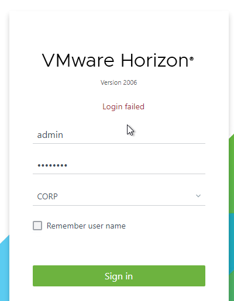
If you want to use a different URL than the Secure Tunnel URL (e.g., short name instead of FQDN, or load balanced name instead of server name), then go to C:\Program Files\Omnissa\Horizon\Server\sslgateway\conf or C:\Program Files\VMware\VMware View\Server\sslgateway\conf, edit or create locked.properties file, and enter the following:
More details at Omnissa 2144768 Accessing the Horizon View Administrator page displays a blank error window in Horizon and 85801 Cross-Origin Resource Sharing (CORS) with Horizon 8 and loadbalanced HTML5 access. allowUnexpectedHost defaults to false in Horizon 2306 and Horizon 2212.1 and newer. Another option is to add portalHost entries as detailed at Allow Omnissa Horizon Web Client Through a Gateway at Omnissa Docs.
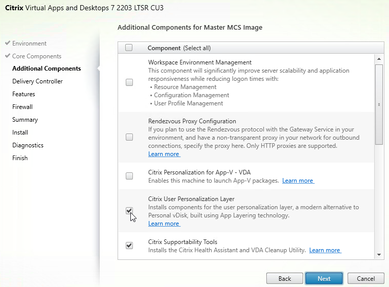
Then restart Omnissa Horizon Secure Gateway service.

Licensing
Horizon Licenses are available either as product keys or as cloud subscription licenses. For cloud subscription licenses, Horizon 2406 and newer can activate the license without needing an Edge Gateway but the Edge Gateway is still recommended to avoid renewing the activation every 90 days. Download the Edge Gateway from the Horizon Cloud next-gen control plane and connect it to a Connection Server. See Deploying a Horizon Edge Gateway for Horizon 8 Environments at Omnissa Tech Zone.
VMware Horizon 8 license keys must be replaced by Omnissa Horizon 8 license keys within 60 days of upgrading to Horizon 2412 or newer.
In the Horizon Administrator Console:
- Open Horizon Administrator Console and login.
- On the left, expand Settings and click Product Licensing and Usage.
- You'll be asked to activate SaaS subscription license or Term/Perpetual license. Term and Perpetual are license keys.
- If SaaS subscription, then login to Horizon Cloud and complete the wizard.
- If Term or Perpetual, then enter your license key.
-
If Term or Perpetual, then licensing information is displayed:
- License expiration is shown.
- Instant Clones are available in all editions.
- Application Remoting (published applications) requires Horizon Advanced Edition.
- Teams Optimization requires Horizon Advanced Edition.
- Session Collaboration requires Horizon Enterprise Edition.
- Help Desk tool is available in all editions.
- App Volumes requires Horizon Enterprise Edition.
- Smart Policies (Dynamic Environment Manager) requires Horizon Enterprise Edition.
- Rest APIs require Horizon Enterprise Edition.


Horizon Administrators
To configure Horizon Administrators:
- In Horizon Console, expand Settings, and click Administrators.
- On the right, near the top, on the Administrators and Groups tab, click Add.
- In the Select administrators or groups page, click Add.
- Enter the name of a group that you want to grant Horizon Administrator permissions to and click Find.
- After the group is found, check the box next to the group (or highlight the group), and then click OK.
-
Continue adding groups or just click Next.
Note: This wizard only lets you select one role; so, only add groups that will have the same role assigned. You can run the wizard multiple times.
-
In the Select a role page, select the role (e.g. Administrators or Help Desk Administrators, which grants access to the Help Desk tool). Then click Next.
-
Select an Access Group to which the permission will be applied and then click Finish.
- Access Groups let you designate permissions to specific pools instead of to all pools.
- Federation Access Groups are available in Horizon 2103 (8.2) and newer and let you restrict admin permissions to specific Global Entitlements (Cloud Pod Architecture).
- In Horizon 2206 and newer, Help Desk role can be assigned to Access Groups.


Help Desk Website
Horizon has a web-based Help Desk tool built into Horizon Connection Server.
- In Horizon Console, simply enter a username in the User Search box at the top of the page.

The Desktops and Applications tabs let you see what the user is entitled to. You can even export these lists.
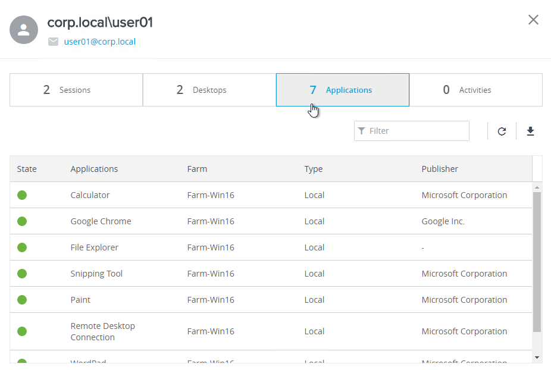
On the Sessions tab, click a session to see more details.
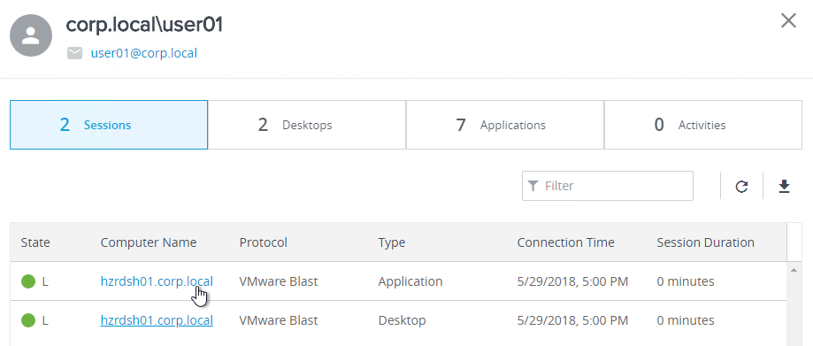
On the Details tab, scroll down to find action buttons like Remote Assistance. These buttons are kind of hidden.
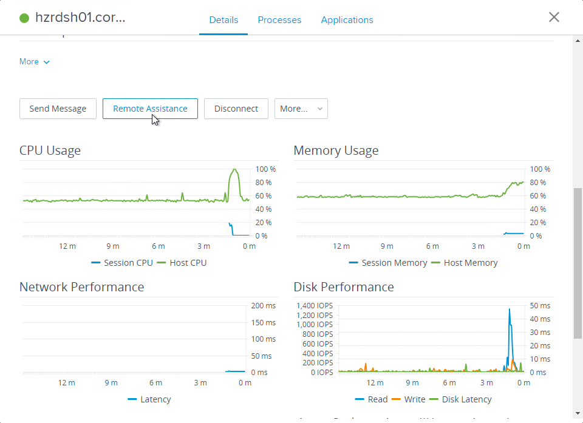
Keep scrolling down and you'll see Logon Segments.
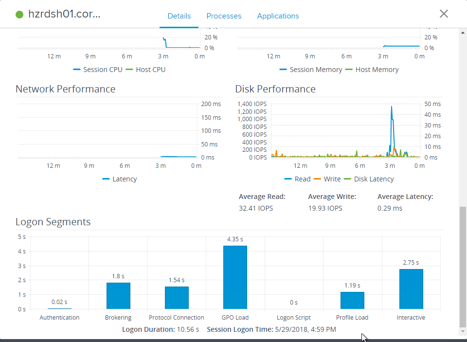
The Processes tab lets you end processes in the user's session.
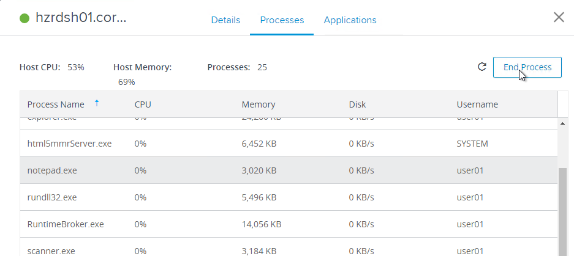
Notes on the Help Desk feature:
- Enterprise Licensing - Help Desk tool requires Horizon Enterprise edition license, or Horizon Apps Advanced edition license. Horizon Standard Edition licenses do not include this tool. The Product Licensing page indicates if Help Desk is licensed or not.
- Horizon has a built-in Help Desk Administrators role that enables members to use the Help Desk tool.
- Add Help Desk users to the Administrators and Groups tab and assign them one of the Help Desk roles.
- Add Help Desk users to the Administrators and Groups tab and assign them one of the Help Desk roles.
- 15 minutes of History - There's only 15 minutes of collected metric data.


See Using Horizon Help Desk Tool in Horizon Console at Omnissa Docs.
vCenter Connection
Horizon must connect to vCenter for several reasons:
- Power manage the virtual machines
- Create new virtual machines using Instant Clones
- Update virtual machines using Instant Clones
See the Product Interoperability Matrix for supported vCenter versions.
If you are adding multiple vCenter servers to Horizon, make sure each vCenter Server has a Unique ID. In vSphere Client, go to the vCenter Server > Configure > Settings > General > Edit > Runtime Settings, and confirm that the ID is unique for each vCenter server.
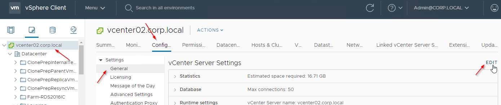
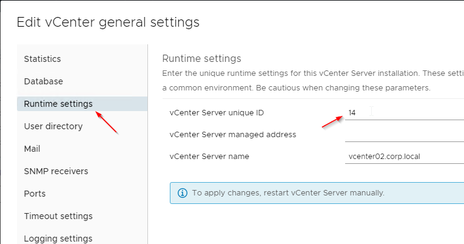
To add the vCenter connection:
- In Horizon Console expand Settings, and click Servers.
- In the right pane, in the vCenter Servers tab, click Add.
-
In the VC Information page, do the following:
-
In the Server address field, enter the FQDN of the vCenter server.
- See the Product Interoperability Matrix for supported vCenter versions.
- In the User Name field, enter the previously created Active Directory account (domainname\username) that Horizon will use to login to vCenter.
- Also enter the service account's password.
- Horizon 2106 (8.3) and newer have a Deployment Type drop-down. If on-premises, leave it set to General.
- Click Next.
- If you see a message regarding invalid certificate, click View Certificate. Then click Accept.
- In Horizon 2012 and newer, View Composer is no longer an option.
- See the Product Interoperability Matrix for supported vCenter versions.
-
In Horizon 2006, in the View Composer page, select Do not use View Composer. There's no need to use Composer since all editions of Horizon 2006 and newer include Instant Clones. Click Next.
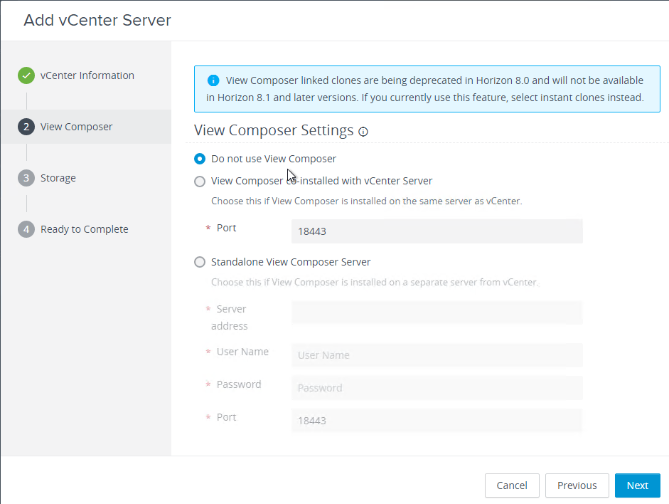
-
In the Storage page, do the following:
-
Reclaim VM disk space requires IOPS during its operation. It's only useful for the rare persistent Instant Clones use case and thus is generally unchecked.
-
Check the box to Enable View Storage Accelerator and increase the host cache size up to 32768. Notes:
- View Storage Accelerator is required for Instant Clones replica disks.
- The cache size value is removed from RAM and that RAM is no longer accessible to virtual machines.
- Higher host cache sizes should speed up Instant Clone Smart Provisioning (without parent image).
- Click Next.
- In the Ready to Complete page, click Submit.
-


Instant Clone Domain Accounts
If you plan to use Instant-Clone to create non-persistent virtual desktops, then add an administrator account that can join machines to the domain.
- In Horizon Console 2012 and newer, on the left expand Settings, and click Domains.
- On the right, the Connection Server tab shows the domains that the Connection Servers see.
- On the tab named Domain Accounts, click Add.
- Select the domain.
- Enter credentials of a service account that can join machines to the domain. Click OK.


Restrict Remote Access
The Users and Groups node has a Remote Access tab. If you add groups or users to this tab, then only these groups and users can login through Unified Access Gateway (UAG).

Users not in the list can't login through Unified Access Gateway (UAG).
Disable Secure Tunnel
By default, internal Horizon Clients connect to Horizon Agents by tunneling (proxying) Blast or PCoIP through a Horizon Connection Server. It would be more efficient if the internal Horizon Clients connect directly to the Horizon Agents instead of going through a Connection Server.
- If the tunnels are enabled, and if you reboot the Connection Server, then user connections will drop.
- If the tunnels are disabled, then rebooting the Connection Server will not affect existing connections.
To disable the tunnels:
- In Horizon Console, on the left, expand Settings, and click Servers.
- On the right, switch to the Connection Servers tab.
- Click the Connection Server to highlight it and click Edit.
- On the General tab, uncheck the boxes next to HTTP(S) Secure Tunnel and the PCoIP Secure Gateway.
- For Blast Secure Gateway, change it to Use Blast Secure Gateway for only HTML Access connections to machine. Click OK.


Event Database and Syslog
To add the Events Database:
- In Horizon Console, on the left, expand Settings and click Event Configuration.
- On the right, under Event Database, click Edit.
-
In the Edit Event Database dialog box, do the following:
- Enter the name of the SQL server.
- Select Microsoft SQL Server as the Database type. Note: Horizon 2103 (8.2) and newer have an option for PostgreSQL.
- Enter the name of the database.
- Enter the SQL account credentials (no Windows authentication).
- Optionally, enter HE_ (or similar) for the Table prefix. This allows you to use the same Events database for multiple Horizon installations.
- Click OK.
- Horizon 2106 (8.3) and newer support SSL to the events database. See SSL Connection to Event Database at Omnissa Docs.
- On the right, in left column, in the Event Settings section, you can click Edit to change the age of events shown in Horizon Console or Horizon Administrator.
- To add a Syslog server, look on the right side of the page.
- You can go to Monitor > Events to view the events in the database.


Global Settings
- In Horizon Administrator Console, on the left, expand Settings and click Global Settings.
- On the right, under Global Settings, in the General Settings tab, click Edit.
- Under Horizon Console Settings, set the Horizon Console Idle Session Timeout. 4320 minutes (72 hours) is the maximum.
- Enable automatic status updates enables automatic updating of the table displayed in the top-left corner of Horizon Console.
- Under SSO Settings, you can set an idle timeout. This is a disconnect, not logoff.
- In a pool's Desktop Pool Settings, you can configure Log Off After Disconnect.
- In a pool's Desktop Pool Settings, you can configure Log Off After Disconnect.
-
Other methods of configuring an idle timeout for desktop sessions:
- Horizon Agent GPO setting Idle Time Until Disconnect (VDI) - combine with the pool's disconnect timer
- Lithnet.IdleLogoff – Log off users after periods of inactivity (with group policy support)
- Raymond Chen - Scheduled Task that triggers from a Windows Event Log entry caused by screensaver
- Under Client Settings, Forcibly disconnect users is an active session timeout. It is not an idle timeout in that it doesn’t care if the user is working or not. The default is 10 hours so consider increasing it. Note: this timer does not log the user out of Windows. Instead it merely disconnects the user and requires the user to logon to Horizon Connection Server again.
- The Send domain list option is unchecked by default, which means users must enter a domain name instead of picking one from a list. Check this box (and uncheck Hide domain list) to restore functionality from Horizon 7.7 and earlier. See VMware Blog Post Changes in Logon for VMware Horizon.
- Make other changes as desired. Click OK when done.
- Horizon 2306 (8.10) and newer let you restrict which versions of Horizon Agent that users can connect to. Find it at Settings > Global Settings > Horizon Agent Restrictions.


Log On as Current User is also disabled by default. To enable this client feature:
- In Horizon Console, on the left, expand Settings, and click Servers. On the right, switch to the Connection Servers tab. Highlight a Connection Server and click Edit.
- Switch to the Authentication tab.
- Scroll down. Check the box next to Accept logon as current user. Click OK.


Client Version Restrictions
Horizon can restrict connections to a minimum version of Horizon Client.
- In Horizon Console, on the left, expand Settings, and click Global Settings.
- On the right, switch to the tab named Client Restriction Settings.
- Click Edit.
- For each client type, enter a minimum version number. Additional options are available if you scroll down.
- Block Additional Clients blocks all clients other than the ones you selected. One use case is to block HTML Access.
- You can customize the message that users see if their client is too old. This feature requires Horizon Client 2006 (aka 8.0) or newer.
- Click OK when done.
- The client version is enforced when you try to launch an icon.


Global Policies
By default, Multimedia Redirection is disabled. You can enable it in Global Policies.
- In Horizon Console, go to Settings > Global Policies. On the right, click Edit Policies.
- Set Multimedia redirection (MMR) to Allow and click OK. Notice that Multimedia redirection is not encrypted.


Backups
Connection Server LDAP Backup can be configured in Horizon Console.
- in Horizon Console, on the left, expand Settings and click Servers. On the right, switch to the Connection Servers tab. Select a Horizon Connection Server and click Backup Now. Backups can be found in C:\programdata\Omnissa\Horizon\backups or C:\ProgramData\VMware\VDM\backups.
- To change automatic backup settings, Edit the Horizon Connection Server, and switch to the Backup tab. You can schedule automatic backups.


Related Pages
- Back to Omnissa Horizon 8